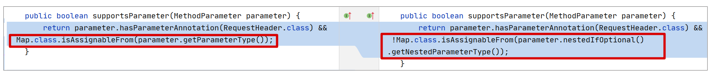
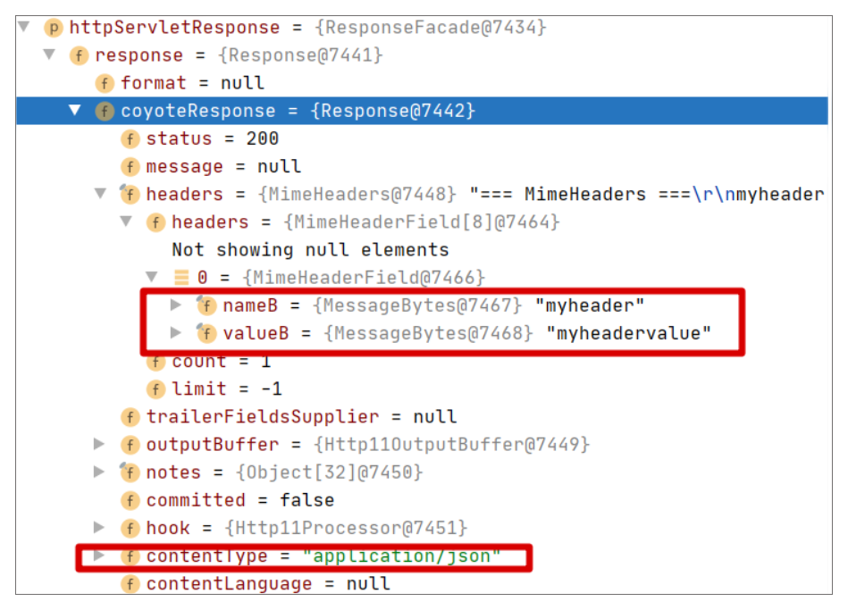
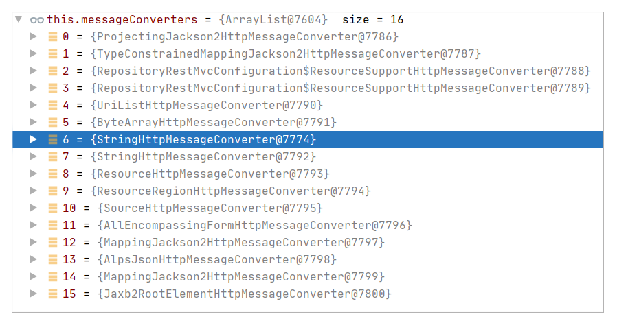

- 00 导读 5分钟轻松了解Spring基础知识.md.html
- 00 开篇词 贴心“保姆”Spring罢工了怎么办？.md.html
- 01 Spring Bean 定义常见错误.md.html
- 02 Spring Bean 依赖注入常见错误（上）.md.html
- 03 Spring Bean 依赖注入常见错误（下）.md.html
- 04 Spring Bean 生命周期常见错误.md.html
- 05 Spring AOP 常见错误（上）.md.html
- 06 Spring AOP 常见错误（下）.md.html
- 07 Spring事件常见错误.md.html
- 08 答疑现场：Spring Core 篇思考题合集.md.html
- 09 Spring Web URL 解析常见错误.md.html
- 10 Spring Web Header 解析常见错误.md.html
- 11 Spring Web Body 转化常见错误.md.html
- 12 Spring Web 参数验证常见错误.md.html
- 13 Spring Web 过滤器使用常见错误（上）.md.html
- 14 Spring Web 过滤器使用常见错误（下）.md.html
- 15 Spring Security 常见错误.md.html
- 16 Spring Exception 常见错误.md.html
- 17 答疑现场：Spring Web 篇思考题合集.md.html
- 18 Spring Data 常见错误.md.html
- 19 Spring 事务常见错误（上）.md.html
- 20 Spring 事务常见错误（下）.md.html
- 21 Spring Rest Template 常见错误.md.html
- 22 Spring Test 常见错误.md.html
- 23 答疑现场：Spring 补充篇思考题合集.md.html
- 导读 5分钟轻松了解一个HTTP请求的处理过程.md.html
- 知识回顾 系统梳理Spring编程错误根源.md.html
- 结束语 问题总比解决办法多.md.html
- 捐赠
10 Spring Web Header 解析常见错误
你好，我是傅健，这节课我们来聊聊 Spring Web 开发中 Header 相关的常见错误案例。
在上节课，我们梳理了 URL 相关错误。实际上，对于一个 HTTP 请求而言，URL 固然重要，但是为了便于用户使用，URL 的长度有限，所能携带的信息也因此受到了制约。
如果想提供更多的信息，Header 往往是不二之举。不言而喻，Header 是介于 URL 和 Body 之外的第二大重要组成，它提供了更多的信息以及围绕这些信息的相关能力，例如Content-Type指定了我们的请求或者响应的内容类型，便于我们去做解码。虽然 Spring 对于 Header 的解析，大体流程和 URL 相同，但是 Header 本身具有自己的特点。例如，Header 不像 URL 只能出现在请求中。所以，Header 处理相关的错误和 URL 又不尽相同。接下来我们看看具体的案例。
案例 1：接受 Header 使用错 Map 类型
在 Spring 中解析 Header 时，我们在多数场合中是直接按需解析的。例如，我们想使用一个名为myHeaderName的 Header，我们会书写代码如下：
@RequestMapping(path = "/hi", method = RequestMethod.GET)
public String hi(@RequestHeader("myHeaderName") String name){
//省略 body 处理
};
定义一个参数，标记上@RequestHeader，指定要解析的 Header 名即可。但是假设我们需要解析的 Header 很多时，按照上面的方式很明显会使得参数越来越多。在这种情况下，我们一般都会使用 Map 去把所有的 Header 都接收到，然后直接对 Map 进行处理。于是我们可能会写出下面的代码：
@RequestMapping(path = "/hi1", method = RequestMethod.GET)
public String hi1(@RequestHeader() Map map){
return map.toString();
};
粗略测试程序，你会发现一切都很好。而且上面的代码也符合针对接口编程的范式，即使用了 Map 这个接口类型。但是上面的接口定义在遇到下面的请求时，就会超出预期。请求如下：
GET http://localhost:8080/hi1- myheader: h1- myheader: h2
这里存在一个 Header 名为 myHeader，不过这个 Header 有两个值。此时我们执行请求，会发现返回的结果并不能将这两个值如数返回。结果示例如下：
{myheader=h1, host=localhost:8080, connection=Keep-Alive, user-agent=Apache-HttpClient/4.5.12 (Java/11.0.6), accept-encoding=gzip,deflate}
如何理解这个常见错误及背后原理？接下来我们就具体解析下。
案例解析
实际上，当我们看到这个测试结果，大多数同学已经能反应过来了。对于一个多值的 Header，在实践中，通常有两种方式来实现，一种是采用下面的方式：
Key: value1,value2
而另外一种方式就是我们测试请求中的格式：
Key:value1- Key:value2
对于方式 1，我们使用 Map 接口自然不成问题。但是如果使用的是方式 2，我们就不能拿到所有的值。这里我们可以翻阅代码查下 Map 是如何接收到所有请求的。
对于一个 Header 的解析，主要有两种方式，分别实现在 RequestHeaderMethodArgumentResolver 和 RequestHeaderMapMethodArgumentResolver 中，它们都继承于 AbstractNamedValueMethodArgumentResolver，但是应用的场景不同，我们可以对比下它们的 supportsParameter()，来对比它们适合的场景：

在上图中，左边是 RequestHeaderMapMethodArgumentResolver 的方法。通过比较可以发现，对于一个标记了 @RequestHeader 的参数，如果它的类型是 Map，则使用 RequestHeaderMapMethodArgumentResolver，否则一般使用的是 RequestHeaderMethodArgumentResolver。
在我们的案例中，很明显，参数类型定义为 Map，所以使用的自然是 RequestHeaderMapMethodArgumentResolver。接下来，我们继续查看它是如何解析 Header 的，关键代码参考 resolveArgument()：
@Override
public Object resolveArgument(MethodParameter parameter, @Nullable ModelAndViewContainer mavContainer,
NativeWebRequest webRequest, @Nullable WebDataBinderFactory binderFactory) throws Exception {
Class<?> paramType = parameter.getParameterType();
if (MultiValueMap.class.isAssignableFrom(paramType)) {
MultiValueMap<String, String> result;
if (HttpHeaders.class.isAssignableFrom(paramType)) {
result = new HttpHeaders();
}
else {
result = new LinkedMultiValueMap<>();
}
for (Iterator<String> iterator = webRequest.getHeaderNames(); iterator.hasNext();) {
String headerName = iterator.next();
String[] headerValues = webRequest.getHeaderValues(headerName);
if (headerValues != null) {
for (String headerValue : headerValues) {
result.add(headerName, headerValue);
}
}
}
return result;
}
else {
Map<String, String> result = new LinkedHashMap<>();
for (Iterator<String> iterator = webRequest.getHeaderNames(); iterator.hasNext();) {
String headerName = iterator.next();
//只取了一个“值”
String headerValue = webRequest.getHeader(headerName);
if (headerValue != null) {
result.put(headerName, headerValue);
}
}
return result;
}
}
针对我们的案例，这里并不是 MultiValueMap，所以我们会走入 else 分支。这个分支首先会定义一个 LinkedHashMap，然后将请求一一放置进去，并返回。其中第 29 行是去解析获取 Header 值的实际调用，在不同的容器下实现不同。例如在 Tomcat 容器下，它的执行方法参考 MimeHeaders#getValue：
public MessageBytes getValue(String name) {
for (int i = 0; i < count; i++) {
if (headers[i].getName().equalsIgnoreCase(name)) {
return headers[i].getValue();
}
}
return null;
}
当一个请求出现多个同名 Header 时，我们只要匹配上任何一个即立马返回。所以在本案例中，只返回了一个 Header 的值。
其实换一个角度思考这个问题，毕竟前面已经定义的接收类型是 LinkedHashMap，它的 Value 的泛型类型是 String，也不适合去组织多个值的情况。综上，不管是结合代码还是常识，本案例的代码都不能获取到myHeader的所有值。
问题修正
现在我们要修正这个问题。在案例解析部分，其实我已经给出了答案。
在 RequestHeaderMapMethodArgumentResolver 的 resolveArgument() 中，假设我们的参数类型是 MultiValueMap，我们一般会创建一个 LinkedMultiValueMap，然后使用下面的语句来获取 Header 的值并添加到 Map 中去：
String[] headerValues = webRequest.getHeaderValues(headerName)
参考上面的语句，不用细究，我们也能看出，我们是可以获取多个 Header 值的。另外假设我们定义的是 HttpHeaders（也是一种 MultiValueMap），我们会直接创建一个 HttpHeaders 来存储所有的 Header。
有了上面的解析，我们可以得出这样一个结论：要完整接收到所有的Header，不能直接使用Map而应该使用MultiValueMap。我们可以采用以下两种方式来修正这个问题：
//方式 1
@RequestHeader() MultiValueMap map
//方式 2
@RequestHeader() HttpHeaders map
重新运行测试，你会发现结果符合预期：
[myheader:“h1”, “h2”, host:“localhost:8080”, connection:“Keep-Alive”, user-agent:“Apache-HttpClient/4.5.12 (Java/11.0.6)”, accept-encoding:“gzip,deflate”]
对比来说，方式 2 更值得推荐，因为它使用了大多数人常用的 Header 获取方法，例如获取 Content-Type 直接调用它的 getContentType() 即可，诸如此类，非常好用。
反思这个案例，我们为什么会犯这种错误呢？追根溯源，还是在于我们很少看到一个 Header 有多个值的情况，从而让我们疏忽地用错了接收类型。
案例 2：错认为 Header 名称首字母可以一直忽略大小写
在 HTTP 协议中，Header 的名称是无所谓大小写的。在使用各种框架构建 Web 时，我们都会把这个事实铭记于心。我们可以验证下这个想法。例如，我们有一个 Web 服务接口如下：
@RequestMapping(path = "/hi2", method = RequestMethod.GET)
public String hi2(@RequestHeader("MyHeader") String myHeader){
return myHeader;
};
然后，我们使用下面的请求来测试这个接口是可以获取到对应的值的：
GET http://localhost:8080/hi2- myheader: myheadervalue
另外，结合案例1，我们知道可以使用 Map 来接收所有的 Header，那么这种方式下是否也可以忽略大小写呢？这里我们不妨使用下面的代码来比较下：
@RequestMapping(path = "/hi2", method = RequestMethod.GET)
public String hi2(@RequestHeader("MyHeader") String myHeader, @RequestHeader MultiValueMap map){
return myHeader + " compare with : " + map.get("MyHeader");
};
再次运行之前的测试请求，我们得出下面的结果：
myheadervalue compare with : null
综合来看，直接获取 Header 是可以忽略大小写的，但是如果从接收过来的 Map 中获取 Header 是不能忽略大小写的。稍微不注意，我们就很容易认为 Header 在任何情况下，都可以不区分大小写来获取值。
那么针对这个案例，如何去理解？
案例解析
我们知道，对于”@RequestHeader(“MyHeader”) String myHeader”的定义，Spring 使用的是 RequestHeaderMethodArgumentResolver 来做解析。解析的方法参考 RequestHeaderMethodArgumentResolver#resolveName：
protected Object resolveName(String name, MethodParameter parameter, NativeWebRequest request) throws Exception {
String[] headerValues = request.getHeaderValues(name);
if (headerValues != null) {
return (headerValues.length == 1 ? headerValues[0] : headerValues);
}
else {
return null;
}
}
从上述方法的关键调用”request.getHeaderValues(name)“去按图索骥，我们可以找到查找 Header 的最根本方法，即 org.apache.tomcat.util.http.ValuesEnumerator#findNext：
private void findNext() {
next=null;
for(; pos< size; pos++ ) {
MessageBytes n1=headers.getName( pos );
if( n1.equalsIgnoreCase( name )) {
next=headers.getValue( pos );
break;
}
}
pos++;
}
在上述方法中，name 即为查询的 Header 名称，可以看出这里是忽略大小写的。
而如果我们用 Map 来接收所有的 Header，我们来看下这个 Map 最后存取的 Header 和获取的方法有没有忽略大小写。
有了案例 1 的解析，针对当前的类似案例，结合具体的代码，我们很容易得出下面两个结论。
1. 存取 Map 的 Header 是没有忽略大小写的
参考案例 1 解析部分贴出的代码，可以看出，在存取 Header 时，需要的 key 是遍历 webRequest.getHeaderNames() 的返回结果。而这个方法的执行过程参考 org.apache.tomcat.util.http.NamesEnumerator#findNext：
private void findNext() {
next=null;
for(; pos< size; pos++ ) {
next=headers.getName( pos ).toString();
for( int j=0; j<pos ; j++ ) {
if( headers.getName( j ).equalsIgnoreCase( next )) {
// duplicate.
next=null;
break;
}
}
if( next!=null ) {
// it's not a duplicate
break;
}
}
// next time findNext is called it will try the
// next element
pos++;
}
这里，返回结果并没有针对 Header 的名称做任何大小写忽略或转化工作。
2. 从 Map 中获取的 Header 也没有忽略大小写
这点可以从返回是 LinkedHashMap 类型看出，LinkedHashMap 的 get() 未忽略大小写。
接下来我们看下怎么解决。
问题修正
就从接收类型 Map 中获取 Header 时注意下大小写就可以了，修正代码如下：
@RequestMapping(path = "/hi2", method = RequestMethod.GET)
public String hi2(@RequestHeader("MyHeader") String myHeader, @RequestHeader MultiValueMap map){
return myHeader + " compare with : " + map.get("myHeader");
};
另外，你可以思考一个问题，如果我们使用 HTTP Headers 来接收请求，那么从它里面获取 Header 是否可以忽略大小写呢？
这点你可以通过它的构造器推测出来，其构造器代码如下：
public HttpHeaders() {
this(CollectionUtils.toMultiValueMap(new LinkedCaseInsensitiveMap<>(8, Locale.ENGLISH)));
}
可以看出，它使用的是 LinkedCaseInsensitiveMap，而不是普通的 LinkedHashMap。所以这里是可以忽略大小写的，我们不妨这样修正：
@RequestMapping(path = "/hi2", method = RequestMethod.GET)
public String hi2(@RequestHeader("MyHeader") String myHeader, @RequestHeader HttpHeaders map){
return myHeader + " compare with : " + map.get("MyHeader");
};
再运行下程序，结果已经符合我们的预期了：
myheadervalue compare with : [myheadervalue]
通过这个案例，我们可以看出：在实际使用时，虽然 HTTP 协议规范可以忽略大小写，但是不是所有框架提供的接口方法都是可以忽略大小写的。这点你一定要注意！
案例 3：试图在 Controller 中随意自定义 CONTENT_TYPE 等
和开头我们提到的 Header 和 URL 不同，Header 可以出现在返回中。正因为如此，一些应用会试图去定制一些 Header 去处理。例如使用 Spring Boot 基于 Tomcat 内置容器的开发中，存在下面这样一段代码去设置两个 Header，其中一个是常用的 CONTENT_TYPE，另外一个是自定义的，命名为 myHeader。
@RequestMapping(path = "/hi3", method = RequestMethod.GET)
public String hi3(HttpServletResponse httpServletResponse){
httpServletResponse.addHeader("myheader", "myheadervalue");
httpServletResponse.addHeader(HttpHeaders.CONTENT_TYPE, "application/json");
return "ok";
};
运行程序测试下（访问 GET http://localhost:8080/hi3 ），我们会得到如下结果：
GET http://localhost:8080/hi3-
HTTP/1.1 200- myheader: myheadervalue- Content-Type: text/plain;charset=UTF-8- Content-Length: 2- Date: Wed, 17 Mar 2021 08:59:56 GMT- Keep-Alive: timeout=60- Connection: keep-alive
可以看到 myHeader 设置成功了，但是 Content-Type 并没有设置成我们想要的”application/json”，而是”text/plain;charset=UTF-8”。为什么会出现这种错误？
案例解析
首先我们来看下在 Spring Boot 使用内嵌 Tomcat 容器时，尝试添加 Header 会执行哪些关键步骤。
第一步我们可以查看 org.apache.catalina.connector.Response#addHeader 方法，代码如下：
private void addHeader(String name, String value, Charset charset) {
//省略其他非关键代码
char cc=name.charAt(0);
if (cc=='C' || cc=='c') {
//判断是不是 Content-Type，如果是不要把这个 Header 作为 header 添加到 org.apache.coyote.Response
if (checkSpecialHeader(name, value))
return;
}
getCoyoteResponse().addHeader(name, value, charset);
}
参考代码及注释，正常添加一个 Header 是可以添加到 Header 集里面去的，但是如果这是一个 Content-Type，则事情会变得不一样。它并不会如此做，而是去做另外一件事，即通过 Response#checkSpecialHeader 的调用来设置 org.apache.coyote.Response#contentType 为 application/json，关键代码如下：
private boolean checkSpecialHeader(String name, String value) {
if (name.equalsIgnoreCase("Content-Type")) {
setContentType(value);
return true;
}
return false;
}
最终我们获取到的 Response 如下：

从上图可以看出，Headers 里并没有 Content-Type，而我们设置的 Content-Type 已经作为 coyoteResponse 成员的值了。当然也不意味着后面一定不会返回，我们可以继续跟踪后续执行。
在案例代码返回ok后，我们需要对返回结果进行处理，执行方法为RequestResponseBodyMethodProcessor#handleReturnValue，关键代码如下：
@Override
public void handleReturnValue(@Nullable Object returnValue, MethodParameter returnType,
ModelAndViewContainer mavContainer, NativeWebRequest webRequest)
throws IOException, HttpMediaTypeNotAcceptableException, HttpMessageNotWritableException {
mavContainer.setRequestHandled(true);
ServletServerHttpRequest inputMessage = createInputMessage(webRequest);
ServletServerHttpResponse outputMessage = createOutputMessage(webRequest);
//对返回值(案例中为“ok”)根据返回类型做编码转化处理
writeWithMessageConverters(returnValue, returnType, inputMessage, outputMessage);
}
而在上述代码的调用中，writeWithMessageConverters 会根据返回值及类型做转化，同时也会做一些额外的事情。它的一些关键实现步骤参考下面几步：
1. 决定用哪一种 MediaType 返回
参考下面的关键代码：
//决策返回值是何种 MediaType
MediaType selectedMediaType = null;
MediaType contentType = outputMessage.getHeaders().getContentType();
boolean isContentTypePreset = contentType != null && contentType.isConcrete();
//如果 header 中有 contentType，则用其作为选择的 selectedMediaType。
if (isContentTypePreset) {
selectedMediaType = contentType;
}
//没有，则根据“Accept”头、返回值等核算用哪一种
else {
HttpServletRequest request = inputMessage.getServletRequest();
List<MediaType> acceptableTypes = getAcceptableMediaTypes(request);
List<MediaType> producibleTypes = getProducibleMediaTypes(request, valueType, targetType);
//省略其他非关键代码
List<MediaType> mediaTypesToUse = new ArrayList<>();
for (MediaType requestedType : acceptableTypes) {
for (MediaType producibleType : producibleTypes) {
if (requestedType.isCompatibleWith(producibleType)) {
mediaTypesToUse.add(getMostSpecificMediaType(requestedType, producibleType));
}
}
}
//省略其他关键代码
for (MediaType mediaType : mediaTypesToUse) {
if (mediaType.isConcrete()) {
selectedMediaType = mediaType;
break;
}
//省略其他关键代码
}
这里我解释一下，上述代码是先根据是否具有 Content-Type 头来决定返回的 MediaType，通过前面的分析它是一种特殊的 Header，在 Controller 层并没有被添加到 Header 中去，所以在这里只能根据返回的类型、请求的 Accept 等信息协商出最终用哪种 MediaType。
实际上这里最终使用的是 MediaType#TEXT_PLAIN。这里还需要补充说明下，没有选择 JSON 是因为在都支持的情况下，TEXT_PLAIN 默认优先级更高，参考代码 WebMvcConfigurationSupport#addDefaultHttpMessageConverters 可以看出转化器是有优先顺序的，所以用上述代码中的 getProducibleMediaTypes() 遍历 Converter 来收集可用 MediaType 也是有顺序的。
2. 选择消息转化器并完成转化
决定完 MediaType 信息后，即可去选择转化器并执行转化，关键代码如下：
for (HttpMessageConverter<?> converter : this.messageConverters) {
GenericHttpMessageConverter genericConverter = (converter instanceof GenericHttpMessageConverter ?
(GenericHttpMessageConverter<?>) converter : null);
if (genericConverter != null ?
((GenericHttpMessageConverter) converter).canWrite(targetType, valueType, selectedMediaType) :
converter.canWrite(valueType, selectedMediaType)) {
//省略其他非关键代码
if (body != null) {
//省略其他非关键代码
if (genericConverter != null) {
genericConverter.write(body, targetType, selectedMediaType, outputMessage);
}
else {
((HttpMessageConverter) converter).write(body, selectedMediaType, outputMessage);
}
}
//省略其他非关键代码
}
}
如代码所示，即结合 targetType（String）、valueType（String）、selectedMediaType（MediaType#TEXT_PLAIN）三个信息来决策可以使用哪种消息 Converter。常见候选 Converter 可以参考下图：

最终，本案例选择的是 StringHttpMessageConverter，在最终调用父类方法 AbstractHttpMessageConverter#write 执行转化时，会尝试添加 Content-Type。具体代码参考 AbstractHttpMessageConverter#addDefaultHeaders：
protected void addDefaultHeaders(HttpHeaders headers, T t, @Nullable MediaType contentType) throws IOException {
if (headers.getContentType() == null) {
MediaType contentTypeToUse = contentType;
if (contentType == null || contentType.isWildcardType() || contentType.isWildcardSubtype()) {
contentTypeToUse = getDefaultContentType(t);
}
else if (MediaType.APPLICATION_OCTET_STREAM.equals(contentType)) {
MediaType mediaType = getDefaultContentType(t);
contentTypeToUse = (mediaType != null ? mediaType : contentTypeToUse);
}
if (contentTypeToUse != null) {
if (contentTypeToUse.getCharset() == null) {
//尝试添加字符集
Charset defaultCharset = getDefaultCharset();
if (defaultCharset != null) {
contentTypeToUse = new MediaType(contentTypeToUse, defaultCharset);
}
}
headers.setContentType(contentTypeToUse);
}
}
//省略其他非关键代码
}
结合案例，参考代码，我们可以看出，我们使用的是 MediaType#TEXT_PLAIN 作为 Content-Type 的 Header，毕竟之前我们添加 Content-Type 这个 Header 并没有成功。最终运行结果也就不出意外了，即”Content-Type: text/plain;charset=UTF-8”。
通过案例分析可以总结出，虽然我们在 Controller 设置了 Content-Type，但是它是一种特殊的 Header，所以在 Spring Boot 基于内嵌 Tomcat 开发时并不一定能设置成功，最终返回的 Content-Type 是根据实际的返回值及类型等多个因素来决定的。
问题修正
针对这个问题，如果想设置成功，我们就必须让其真正的返回就是 JSON 类型，这样才能刚好生效。而且从上面的分析也可以看出，返回符合预期也并非是在 Controller 设置的功劳。不过围绕目标，我们也可以这样去修改下：
1. 修改请求中的 Accept 头，约束返回类型
参考代码如下：
GET http://localhost:8080/hi3
Accept:application/json
即带上 Accept 头，这样服务器在最终决定 MediaType 时，会选择 Accept 的值。具体执行可参考方法 AbstractMessageConverterMethodProcessor#getAcceptableMediaTypes。
2. 标记返回类型
主动显式指明类型，修改方法如下：
@RequestMapping(path = "/hi3", method = RequestMethod.GET, produces = {"application/json"})
即使用 produces 属性来指明即可。这样的方式影响的是可以返回的 Media 类型，一旦设置，下面的方法就可以只返回一个指明的类型了。参考 AbstractMessageConverterMethodProcessor#getProducibleMediaTypes：
protected List<MediaType> getProducibleMediaTypes(
HttpServletRequest request, Class<?> valueClass, @Nullable Type targetType) {
Set<MediaType> mediaTypes =
(Set<MediaType>) request.getAttribute(HandlerMapping.PRODUCIBLE_MEDIA_TYPES_ATTRIBUTE);
if (!CollectionUtils.isEmpty(mediaTypes)) {
return new ArrayList<>(mediaTypes);
}
//省略其他非关键代码
}
上述两种方式，一个修改了 getAcceptableMediaTypes 返回值，一个修改了 getProducibleMediaTypes，这样就可以控制最终协商的结果为 JSON 了。从而影响后续的执行结果。
不过这里需要额外注意的是，虽然我们最终结果返回的 Content-Type 头是 JSON 了，但是对于内容的加工，仍然采用的是 StringHttpMessageConverter，感兴趣的话你可以自己去研究下原因。
重点回顾
通过这节课的学习，我们了解到了在 Spring 解析Header中的一些常见错误及其背后的深层原因。这里带你回顾下重点：
- 要完整接收到所有的 Header，不能直接使用Map而应该使用MultiValueMap。常见的两种方式如下：
//方式 1
@RequestHeader() MultiValueMap map
//方式 2：专用于Header的MultiValueMap子类型
@RequestHeader() HttpHeaders map
深究原因，Spring在底层解析Header时如果接收参数是Map，则当请求的Header是多Value时，只存下了其中一个Value。
在 HTTP 协议规定中，Header 的名称是无所谓大小写的。但是这并不意味着所有能获取到Header的途径，最终得到的Header名称都是统一大小写的。
不是所有的Header在响应中都能随意指定，虽然表面看起来能生效，但是最后返回给客户端的仍然不是你指定的值。例如，在Tomcat下，CONTENT_TYPE这个Header就是这种情况。
以上即为这一讲的核心知识点，希望你以后在解析Header时会更有信心。
思考题
在案例 3 中，我们以 Content-Type 为例，提到在 Controller 层中随意自定义常用头有时候会失效。那么这个结论是不是普适呢？即在使用其他内置容器或者在其他开发框架下，是不是也会存在一样的问题？
期待你的思考，我们留言区见！
© 2019 - 2023 Liangliang Lee. Powered by gin and hexo-theme-book.